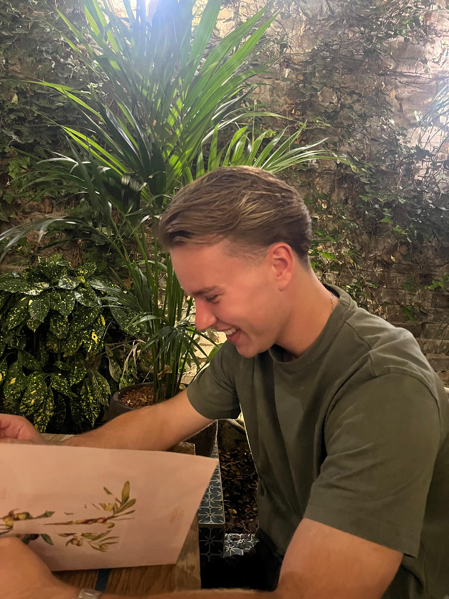
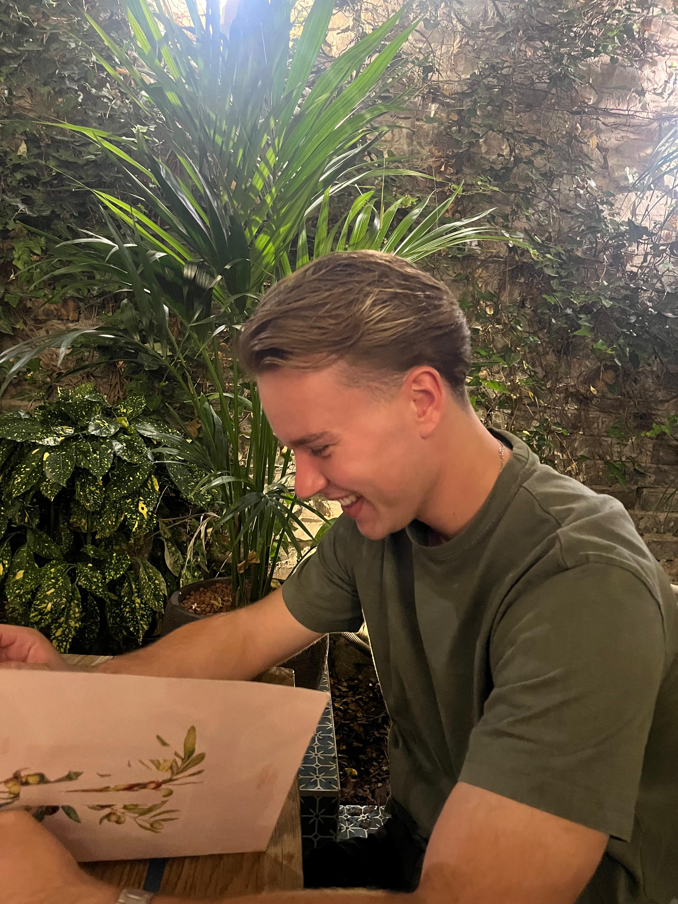

- Over mij
 

Wie ben ik?
Mijn naam is Tim Klaassen, ik ben 21 jaar en woon in Goes, Zeeland. Op dit moment studeer ik Ondernemerschap en Retail Management aan de Avans Hogeschool in Breda. In mijn vrije tijd houd ik me graag bezig met mijn eigen onderneming, ben ik graag met vrienden, en sport ik regelmatig. Daarnaast vind ik het interessant om nieuwe innovaties en ontwikkelingen op het internet te volgen, vooral wanneer ze iets te maken hebben met digitalisering, business of technologie. Als persoon ben ik leergierig, nieuwsgierig en probeer ik steeds meer uit mijn comfortzone te stappen. Ik vind het belangrijk om mezelf uit te dagen zowel op persoonlijk vlak als binnen mijn studie en werk. Hierdoor blijf ik groeien en ontwikkel ik steeds duidelijker wat ik écht wil bereiken in de toekomst.